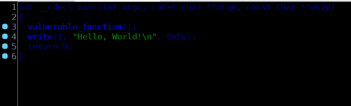
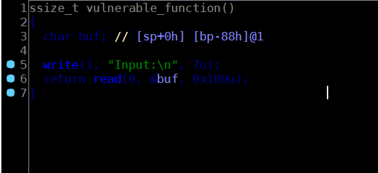
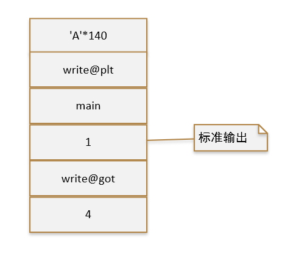

题目
Jarvis OJ-Pwn-level3
解题思路
拿到题目有两个文件：level3和libc-2.19.so
IDA看一下level3：
main函数

vulnerable_function函数

很明显的栈溢出，由于程序中并没有使用system函数，同时我们拿到了libc.so，可以考虑leak出write()的地址来计算system()和'/bin/sh'的地址。
具体流程
泄露write函数地址
从IDA可以看到buf的大小136字节，加上ebp，最终需要填充140字节，然后是write@plt的地址，接着我们在执行完write()后可以返回到main(),栈布局如下：
